Peptides
At Vital Health, peptide therapy is personal. We start with your labs, your history, and your goals, then only consider peptides when that direction is clinically supported.
What peptides are
Peptides are short chains of amino acids your body already makes. They act as biological messengers, signaling specific cells and tissues. Targeting one pathway means the response can match a particular goal, like tissue repair, immune support, or sleep, rather than broadly affecting the body.
Protocols we may discuss
Ipamorelin
Often part of conversations around sleep, recovery, body composition, energy, and joint comfort.
Sermorelin
Considered for growth hormone signaling, exercise recovery, energy, and body composition.
BPC-157
Studied for tissue repair. Muscle, tendon, and ligament recovery, joint comfort, and gut health.
CJC-1295
Discussed for growth hormone signaling, lean muscle, recovery, and restorative sleep.
MOTS-c
Tied to metabolism, cellular performance, glucose utilization, and endurance.
Thymosin-α1
Used in immune support conversations, especially after a compromised immune response.
PT-141
Considered for sexual wellness when the history and treatment plan support it.
Semax / Selank
Discussed for cognitive performance, stress response, and calm focus.
Book a consultation with Vital Health vitalhealthim.com